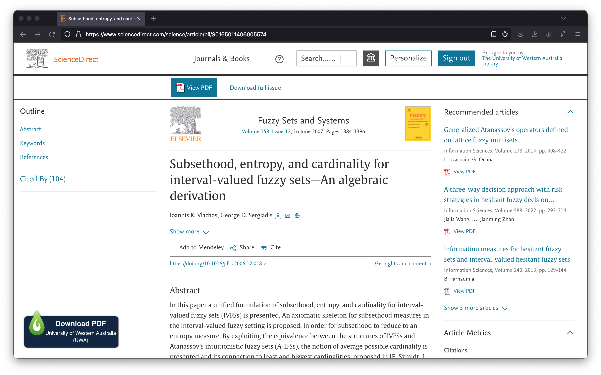
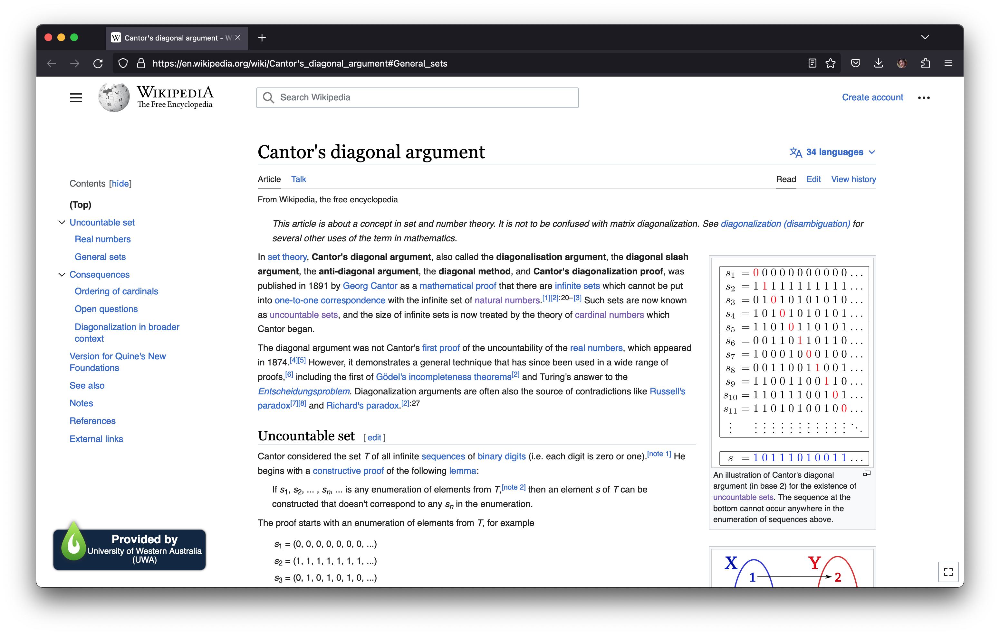
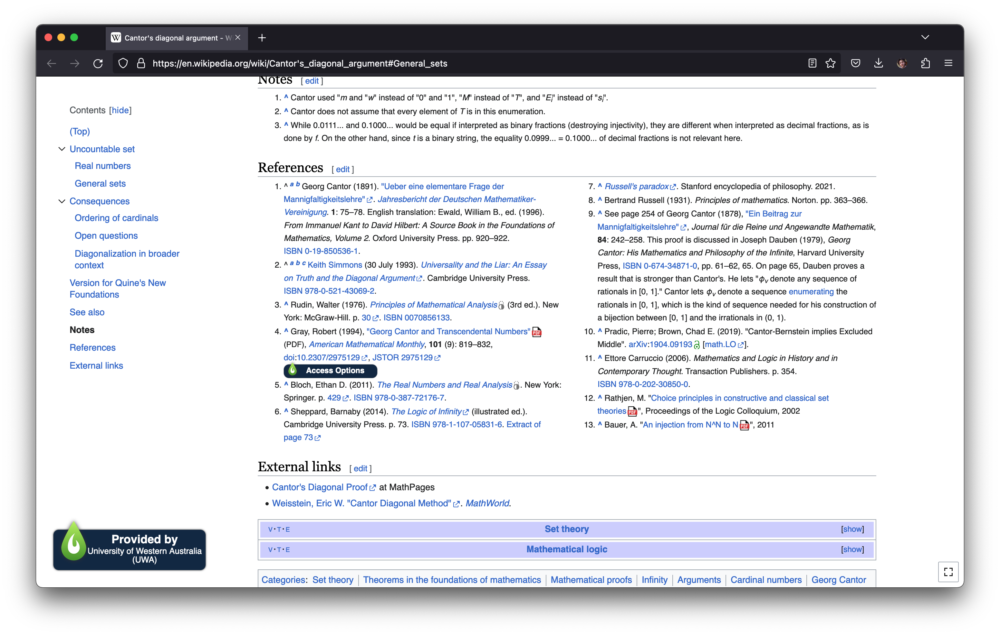

There is a wonderful browser extension with an awful name made by Third Iron called LibKey Nomad. It allows university staff and students gain access to academic journals that your univesity is subscribed to without logging in or requesting access. You install the extension, sign in with your university credentials, and then it just works. Whenever you are on a site that LibKey Nomad is automatically allowing you access to, it displays this little banner in the corner of the page.

You click it and you are taken direct to the paper. It really streamlines the process for a lot of sites.

It hilariously appears on Wikipedia articles, as if the University of Western Australia has been incredibly gracious by allowing me to see Wikipedia. The reasoning here is that access to (at least one of) the citations is being provided through LibKey Nomad, but this makes the banner no less obnoxious.
The banner doesn't even have a function like it does on other journals, clicking it just takes you to the references list.

Wikipedia is one of the most impressive things humans have created. Keep your banners to yourself, Third Iron.